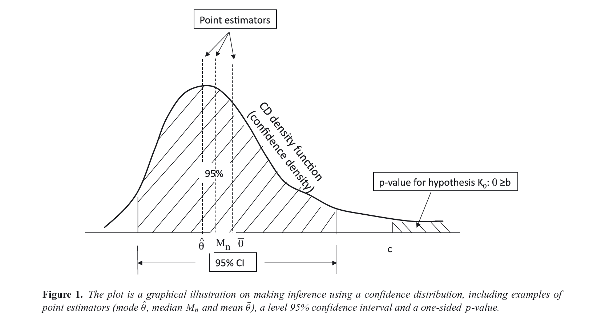
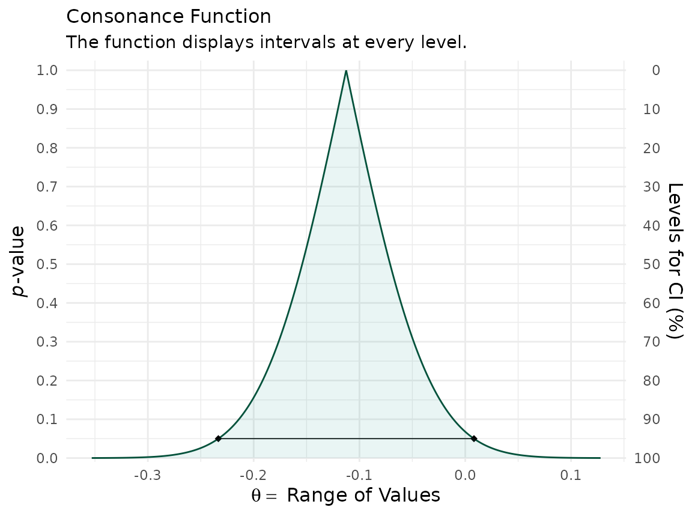
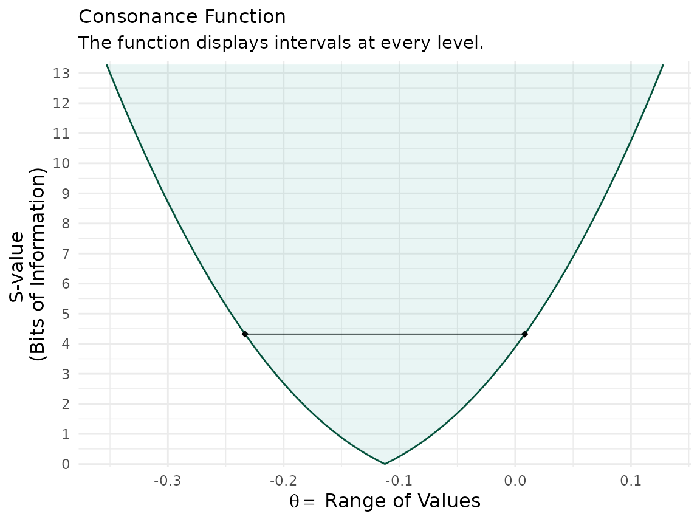
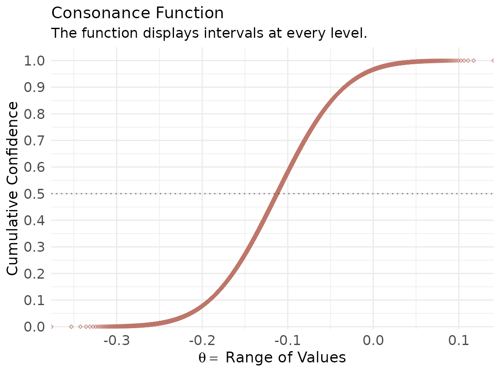
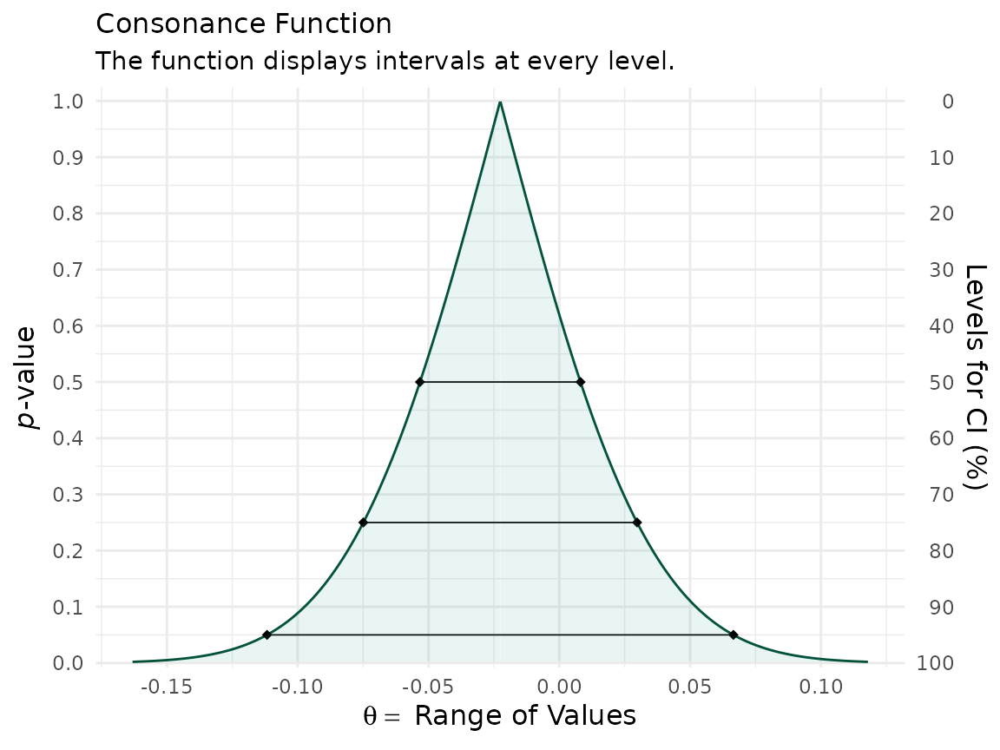
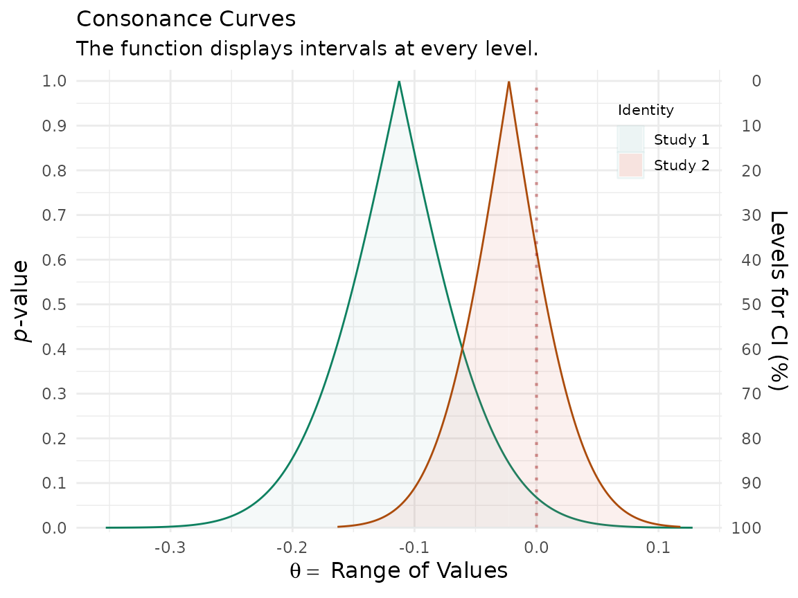
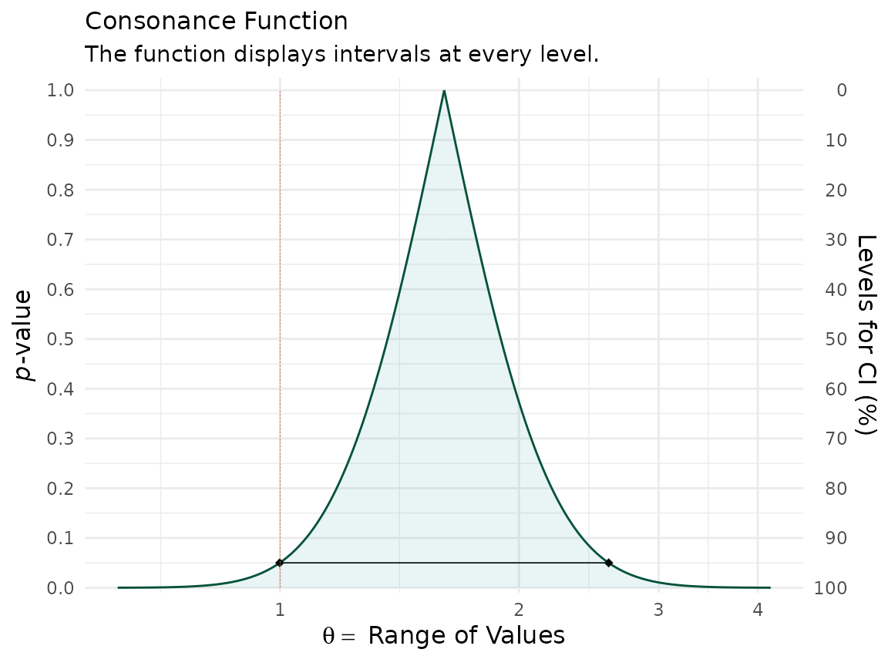
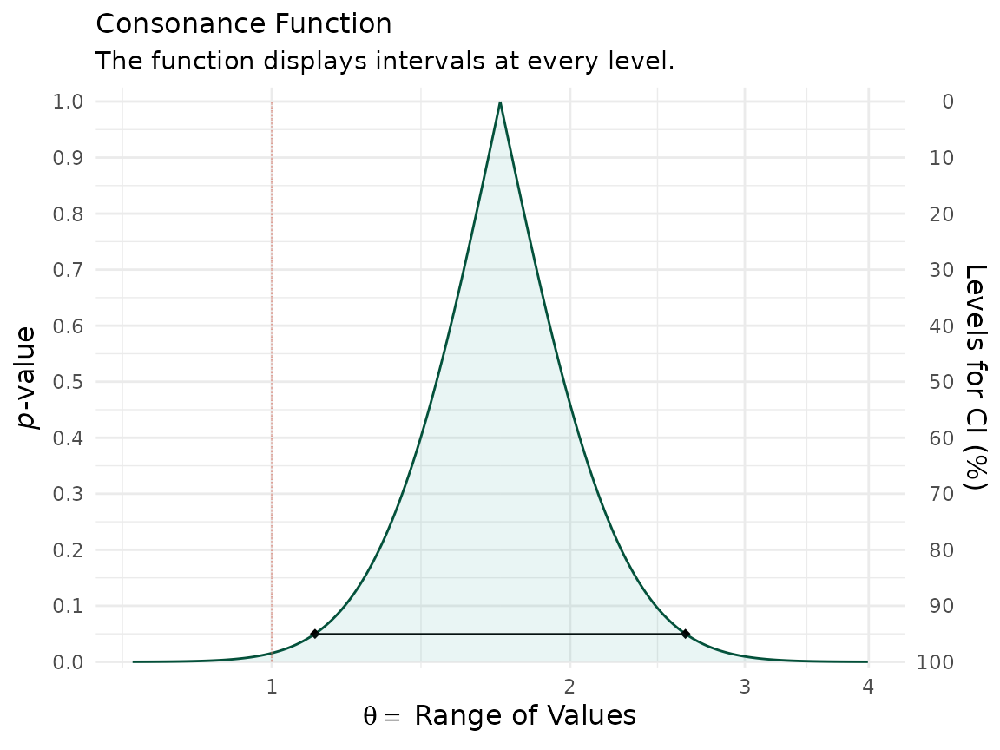
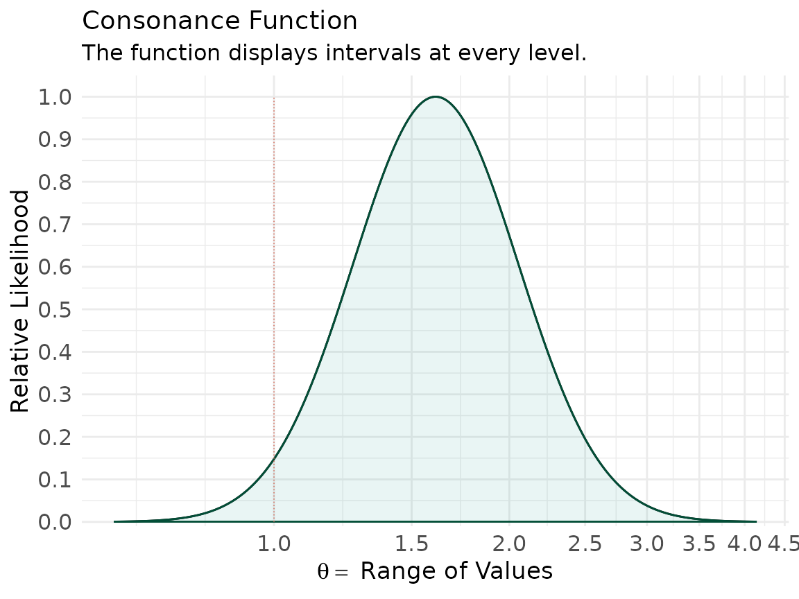

Introduction
Here I show how to produce P-value, S-value,
likelihood, and deviance functions with the concurve
package using fake data and data from real studies. Simply put, these
functions are rich sources of information for scientific inference and
the image below, taken from Xie & Singh, 2013[@1;]
displays why.

For a more extensive discussion of these concepts, see the following references.1–16
Simple Models
First, I’d like to get started with very simple scenarios, where we could generate some normal data and combine two vectors in a dataframe,
library(concurve)
#> Please see the documentation on https://data.lesslikely.com/concurve/ or by typing `help(concurve)`
set.seed(1031)
GroupA <- rnorm(500)
GroupB <- rnorm(500)
RandomData <- data.frame(GroupA, GroupB)and then look at the differences between the two vectors. We’ll plug
these vectors and the dataframe and now they’re inside of the
curve_mean() function. Here, the default method involves
calculating CIs using the Wald method.
intervalsdf <- curve_mean(GroupA, GroupB,
data = RandomData, method = "default"
)Each of the functions within concurve will generally
produce a list with three items, and the first will usually contain the
function of interest. Here, we are looking at the first ten results of
the first list of the previous item that we constructed.
head(intervalsdf[[1]], 10)
#> lower.limit upper.limit intrvl.width intrvl.level cdf pvalue
#> 1 -0.1125581 -0.1125581 0.000000e+00 0e+00 0.50000 1.0000
#> 2 -0.1125658 -0.1125504 1.543412e-05 1e-04 0.50005 0.9999
#> 3 -0.1125736 -0.1125427 3.086824e-05 2e-04 0.50010 0.9998
#> 4 -0.1125813 -0.1125350 4.630236e-05 3e-04 0.50015 0.9997
#> 5 -0.1125890 -0.1125273 6.173649e-05 4e-04 0.50020 0.9996
#> 6 -0.1125967 -0.1125195 7.717061e-05 5e-04 0.50025 0.9995
#> 7 -0.1126044 -0.1125118 9.260473e-05 6e-04 0.50030 0.9994
#> 8 -0.1126122 -0.1125041 1.080389e-04 7e-04 0.50035 0.9993
#> 9 -0.1126199 -0.1124964 1.234730e-04 8e-04 0.50040 0.9992
#> 10 -0.1126276 -0.1124887 1.389071e-04 9e-04 0.50045 0.9991
#> svalue
#> 1 0.0000000000
#> 2 0.0001442767
#> 3 0.0002885679
#> 4 0.0004328734
#> 5 0.0005771935
#> 6 0.0007215279
#> 7 0.0008658768
#> 8 0.0010102402
#> 9 0.0011546179
#> 10 0.0012990102That gives us a very comprehensive table, but it can be difficult to
parse through, so luckily, we can view a graphical function using the
ggcurve() function. The basic arguments that must be
provided are the data argument and the “type” argument. To plot a
consonance/confidence function, we would write “c”.
(function1 <- ggcurve(data = intervalsdf[[1]], type = "c", nullvalue = NULL))
#> Warning: Using `size` aesthetic for lines was deprecated in ggplot2 3.4.0.
#> ℹ Please use `linewidth` instead.
#> ℹ The deprecated feature was likely used in the concurve package.
#> Please report the issue at <https://github.com/zadrafi/concurve/issues>.
#> This warning is displayed once per session.
#> Call `lifecycle::last_lifecycle_warnings()` to see where this warning was
#> generated.
We can see that the consonance “curve” is every interval estimate plotted, and provides the P-values, CIs, along with the median unbiased estimate It can be defined as such,
Its information transformation, the surprisal function, which closely maps to the deviance function, can be constructed by taking the of the observed P-value.3,17,18
To view the surprisal function, we simply change the type to
“s” in ggcurve().
(function1 <- ggcurve(data = intervalsdf[[1]], type = "s"))
We can also view the consonance distribution by changing the type to
“cdf”, which is a cumulative probability distribution, also
more formally known as the “confidence distribution”. The point at which
the curve reaches 0.5/50% is known as the “median unbiased
estimate”. It is the same estimate that is typically at the
peak of the confidencr curve from above, but this is not always the
case.
(function1s <- ggcurve(data = intervalsdf[[2]], type = "cdf", nullvalue = NULL))
We can also get relevant statistics that show the range of values by
using the curve_table() function. The tables can also be
exported in several formats such as .docx, .ppt, images, and TeX
files.
(x <- curve_table(data = intervalsdf[[1]], format = "image"))Lower Limit |
Upper Limit |
Interval Width |
Interval Level (%) |
CDF |
P-value |
S-value (bits) |
|---|---|---|---|---|---|---|
-0.132 |
-0.093 |
0.039 |
25.0 |
0.625 |
0.750 |
0.415 |
-0.154 |
-0.071 |
0.083 |
50.0 |
0.750 |
0.500 |
1.000 |
-0.183 |
-0.042 |
0.142 |
75.0 |
0.875 |
0.250 |
2.000 |
-0.192 |
-0.034 |
0.158 |
80.0 |
0.900 |
0.200 |
2.322 |
-0.201 |
-0.024 |
0.177 |
85.0 |
0.925 |
0.150 |
2.737 |
-0.214 |
-0.011 |
0.203 |
90.0 |
0.950 |
0.100 |
3.322 |
-0.233 |
0.008 |
0.242 |
95.0 |
0.975 |
0.050 |
4.322 |
-0.251 |
0.026 |
0.276 |
97.5 |
0.988 |
0.025 |
5.322 |
-0.271 |
0.046 |
0.318 |
99.0 |
0.995 |
0.010 |
6.644 |
Comparing Functions
If we wanted to compare two studies or even two datasets to see the
amount of “consonance/concordance”, we could use the
curve_compare() function to get a very rough numerical
output.
First, we generate some more fake data, that you would be unlikely to see in the real world, but that serves as a great tutorial.
GroupA2 <- rnorm(500)
GroupB2 <- rnorm(500)
RandomData2 <- data.frame(GroupA2, GroupB2)
model <- lm(GroupA2 ~ GroupB2, data = RandomData2)
randomframe <- curve_gen(model, "GroupB2")Once again, we’ll plot this data with ggcurve(). We can
also indicate whether we want certain interval estimates to be plotted
in the function with the “levels” argument. If we wanted to
plot the 50%, 75%, and
95% intervals, we’d provide the argument this way:
(function2 <- ggcurve(type = "c", randomframe[[1]], levels = c(0.50, 0.75, 0.95), nullvalue = NULL))
Now that we have two datasets, and two functions, we can compare them
using the plot_compare() function.
This function will provide us with the area that is shared between the curve, along with a ratio of overlap to non-overlap.
Another way to compare the functions is to use the
cowplot & plot_grid() functions, which I
am mostly beginning to lean towards to.
cowplot::plot_grid(function1, function2)
It’s clear that the outputs have changed and indicate far more overlap than before. A very useful and easy way to spot differences or lack of them.
Constructing Functions From Single Intervals
We can also take a set of confidence limits and use them to construct
a consonance, surprisal, likelihood or deviance function using the
curve_rev() function. This method is computed from the
approximate normal distribution, but there are several caveats and
scenarios in which it can break down, so I would recommend visiting the
reference page and reading the documentation, curve_rev().
In general, those settings that conflict with such scenarios are not the
default settings and I would feel uncomfortable to keep them that
way.
For this next example, we’ll use two epidemiological studies19,20 that studied the impact of selective serotonin reuptake inhibitor exposure in pregnant mothers, and the association with the rate of autism in newborn childs.
The second of these studies suggested a null effect of SSRI exposure on autism rates in children, due to the lack of statistical significance, whereas the first one “found” an effect”. The authors claimed that the two studies they conducted clear contradict one another. However, this was a complete misinterpretation of their own results.
Here I take the reported effect estimates from both studies, the confidence limits, and use them to reconstruct entire confidence curves to show how much the results truly differed.
curve1 <- curve_rev(point = 1.7, LL = 1.1, UL = 2.6, type = "c", measure = "ratio", steps = 10000)
#> [1] 0.2194431
(ggcurve(data = curve1[[1]], type = "c", measure = "ratio", nullvalue = c(1)))
curve2 <- curve_rev(point = 1.61, LL = 0.997, UL = 2.59, type = "c", measure = "ratio", steps = 10000)
#> [1] 0.2435408
(ggcurve(data = curve2[[1]], type = "c", measure = "ratio", nullvalue = c(1)))
The null value is shown via the red line and a large portion of bnoth
of the confidence curves are away from it. We can also see this by
plotting the likelihood functions via the curve_rev()
function.
We can specify that we want a likelihood function using curve_rev() by specifying “l” for the type argument.
lik1 <- curve_rev(point = 1.7, LL = 1.1, UL = 2.6, type = "l", measure = "ratio", steps = 10000)
#> [1] 0.2194431
(ggcurve(data = lik1[[1]], type = "l1", measure = "ratio", nullvalue = c(1)))
lik2 <- curve_rev(point = 1.61, LL = 0.997, UL = 2.59, type = "l", measure = "ratio", steps = 10000)
#> [1] 0.2435408
(ggcurve(data = lik2[[1]], type = "l1", measure = "ratio", nullvalue = c(1)))
We can also view the amount of agreement between the likelihood functions of these two studies using the plot_compare function and producing areas shared between the curves.
We can also do the same with the confidence curves.
This vignette was meant to be a very simple introduction to the concept of the confidence curve and how it relates to the likelihood function, and how both of these functions are much richer sources of information that single numerical estimates. For more detailed vignettes and explanations, please see some of the other articles listed on this site here.
Cite R Packages
Please remember to cite the R packages that you use in your work.
citation("concurve")
#> To cite package 'concurve' in publications use:
#>
#> Rafi Z, Vigotsky A (2026). _concurve: Computes and Plots
#> Compatibility (Confidence) Intervals, P-Values, S-Values, &
#> Likelihood Intervals to Form Consonance, Surprisal, & Likelihood
#> Functions_. R package version 3.0.0,
#> <https://CRAN.R-project.org/package=concurve>.
#>
#> Rafi Z, Greenland S (2020). "Semantic and Cognitive Tools to Aid
#> Statistical Science: Replace Confidence and Significance by
#> Compatibility and Surprise." _BMC Medical Research Methodology_,
#> *20*, 244. ISSN 1471-2288. doi:10.1186/s12874-020-01105-9
#> <https://doi.org/10.1186/s12874-020-01105-9>.
#> <https://doi.org/10.1186/s12874-020-01105-9>.
#>
#> To see these entries in BibTeX format, use 'print(<citation>,
#> bibtex=TRUE)', 'toBibtex(.)', or set
#> 'options(citation.bibtex.max=999)'.
citation("cowplot")
#> To cite package 'cowplot' in publications use:
#>
#> Wilke C (2025). _cowplot: Streamlined Plot Theme and Plot Annotations
#> for 'ggplot2'_. R package version 1.2.0,
#> <https://wilkelab.org/cowplot/>.
#>
#> A BibTeX entry for LaTeX users is
#>
#> @Manual{,
#> title = {cowplot: Streamlined Plot Theme and Plot Annotations for 'ggplot2'},
#> author = {Claus O. Wilke},
#> year = {2025},
#> note = {R package version 1.2.0},
#> url = {https://wilkelab.org/cowplot/},
#> }